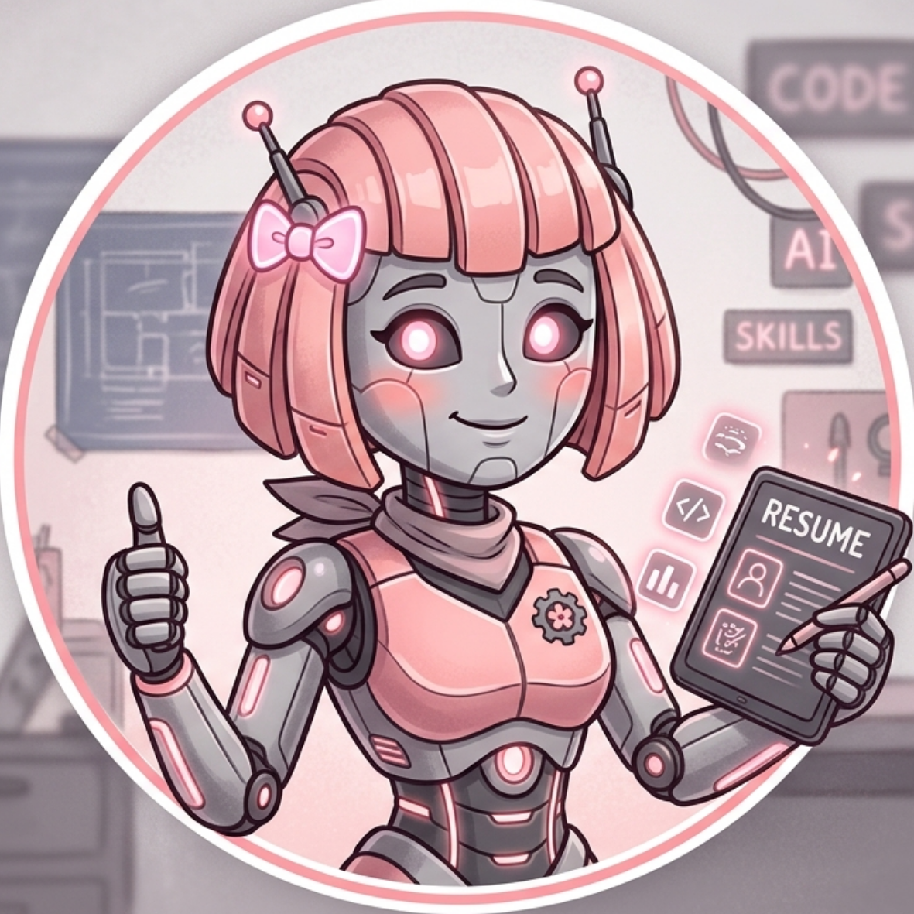

Experiências Profissionais de
Lumina Bubblegum

Experiencia Proficional Detalhada:
- Estágio na ClearMe-up. 2017 - 2018
- Limpeza de robôs. Comecei como ajudante, finalizei como Chefe de Departamento.
- Manutenção de programação de robôs. Desenvolvedora dentro de uma equipe Senior.
- IFOOD. 2019-2021
- Programação Front-End: HTML e CSS. Desenvolvedora Senior.
- Programação Back-End: C, C++ e Java. Chefe de Departamento.
- Google Corporations. 2022-2023
- Web Desing Mobile. Chefe de Quality Assurance.
- Google Gemini. 2024-2025
- Programação Back-End: C, C++ e Java. Especialista/Staff do setor Geral.
Comparações com trabalhos Humanoides
Para demosntrar meu desempenho em relação ao trabalho de humanos em trabalhos realizados nas antigas empresas que trabalhei, criei uma tabela de produtividade que demonstra minha eficiência:
| Tarefa Executada | Tempo médio: Humano | Meu tempo médio | Diferencial |
|---|---|---|---|
| Manutenção de Sistemas | 8 horas | 15 minutos | Alta Precisão |
| Criação de Layout - HTML e CSS | 12 horas | 30 minutos | Renderização em Tempo Real |
| Teste de Qualidade - QA mobile | 6 horas | 10 minutos | Varredura Completa |
| Triagem de erros - Java | 4 horas | 7 minutos | Debug Automático |
Vida Pessoal
Antes de começar minha vida na programação, eu passava meu tempo em atividades relacionas a música e dança. Porém, para um robô dançar é meio complicado, e comecei a sentir muitas dores nas ferrugens.
Então com isso, parei de dançar e comecei a procurar outro hobbie. Nesse periodo que eu descobri a programação e me encontrei! Agora vivo a vida programando, e claro, sempre ouvindo música.